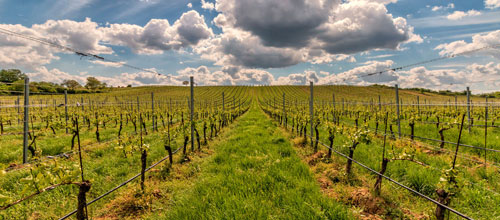

<!-- We don't need full layout here, because this page will be parsed with Ajax-->
<!-- Top Navbar-->
<div class="navbar">
  <div class="navbar-inner">
    <div class="left">
            <!-- Right link contains only icon - additional "icon-only" class-->
            <a href="#" class="link icon-only back show-menu"><i class="icon iconfont">&#xe615;</i></a>
          </div>
          <div class="center sliding">生产计划</div>
  </div>
</div>
<div class="pages">
  <!-- Page, data-page contains page name-->
  <div data-page="menu8-4" class="page white-background">
    <div class="menur-box">
      <div class="menur-box-img"></div>
      <div class="menur-box-txt">
        <h2>生产计划</h2>
        <p>以生态农业规划为基础，为用户提供精确的种植、养殖、生产计划。</p>
      </div>
    </div>
  </div>
</div>